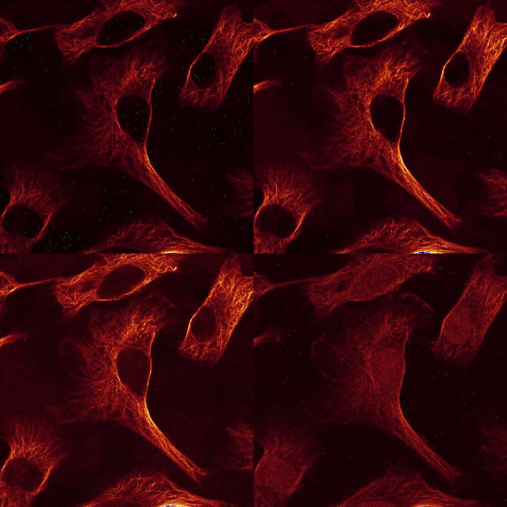
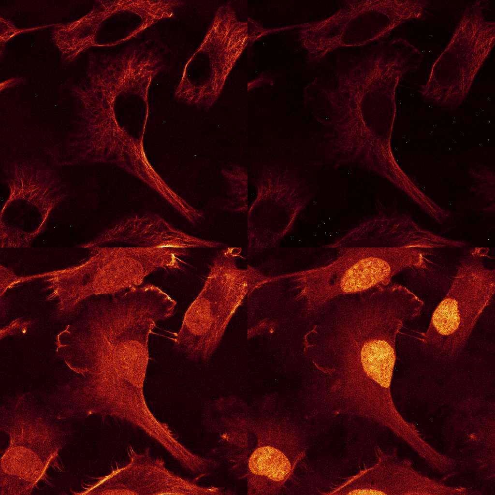
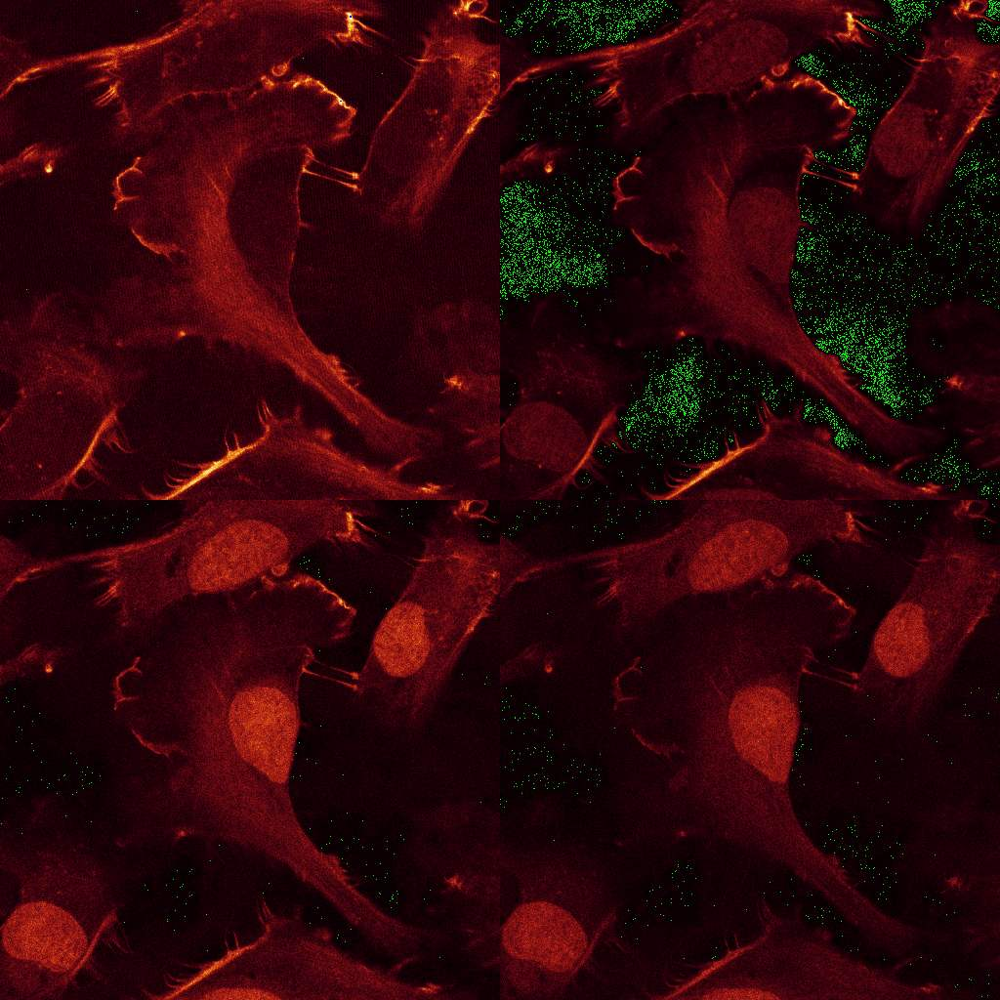
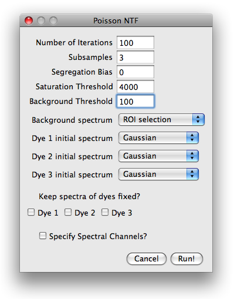
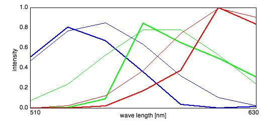
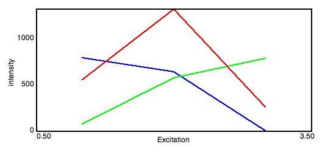
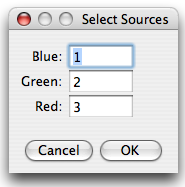
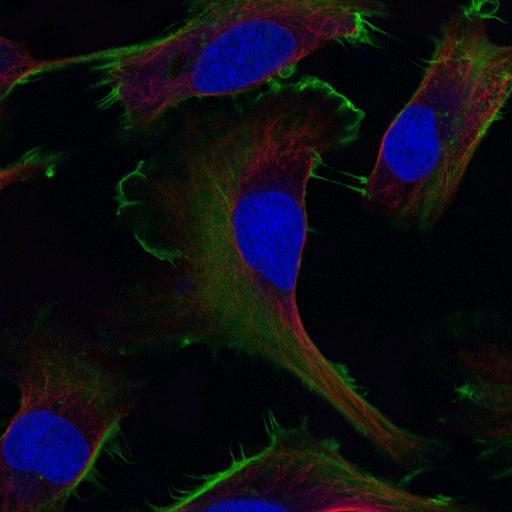

Triple stain imaged with Leica SP2
Table of Contents
- Sample description and download
- Loading the data
- Options and parameters
- Examining the progress during runtime
- Analysing the results
Back to the main Page
Download the data set from here. The data consists of
12 images, comprising 3 excitations with 4 emission channels each. Stains: double-stranded
nucleic acids (mainly ribosomal RNA and nuclear DNA) were labeled with EtBr;
filamentous actin (F-actin) was stained with Alexa Fluor 532 (A532) conjugated phalloidin,
while tubulin was labeled with an Alexa Fluor 488 (A488) linked antibody.
The sample was imaged with a LEICA SP2 using the exciation wavelength 488, 514 and 561nm.
Raw Data:



Start the plugin from the plugin menu
while no image is open. You will be asked to specify the type of data. Choose Leica SP2 and locate
image series the in the open dialog that follows. Select on of the images and click "Open".
A dialog will appear listing the excitation (488, 514 and 561nm). Select all three.
The plugin will open three stacks, one for each excitation.
The first piece of information the plugin needs to know, is the number of sources the
data is to be decomposed into. Choose 3. Next, another dialog will appear,
in which the mandatory and optional information can be specified. The parameter dialog is shown in
the next figure. The number of iterations is preset to 100 (which is rather small, but suitable for
illustration purposes).

The image is taken with a 12bit AD converter, such that a saturation threshold
slightly below 4096 is appropriate. A background threshold of 100 is reasonable.
Higher background thresholds result in smaller runtime since the algorithm runs on a smaller data set.
For the background spectrum, select ROI selection, leave everything else as is and hit run.
Next, you will be prompted for a ROI which contains only background. Select a small region
without cells and press OK. The algorithm will start.
After the algorithm started, PoissonNTF opened two windows displaying the emission and excitation
spectra and a small dialog with a Cancel and Least Square Solution.
The plots shows the evolution of the estimated spectra and the initial spectra. If the spectra
look correct and don't change anymore, the user can interrupt the algorithm by pressing the
Least square solution button to use the current spectra to calculate a standard linear
unmixing solution. The progress of the algorithm is illustrated in the ImageJ progress bar.
After the last iteration finished, PoissonNTF displays an image stack containing the estimated
sources and opens a small dialog with functions to produce false color overlay of some of the
sources, save the spectra or display the background spectrum.
The spectra are normalized to unit area and the concentrations maps are scaled to maximum intensity.
The actual scale of the images is absorbed in the excitation efficiencies, which can be of
vastly different magnitudes. If desired, images can be individually rescaled
using functions ImageJ provides.
Spectra and Sources
Emission Spectra:

Excitation Spectra:

RBG false color overlay
After pressing the RGB overlay button, a small dialog appears where the sources are assigned
to colors. PoissonNMF then produces a RGB picture according to the selection, where each source
is scaled to maximum intensity.

Red-Green-Blue Overlay:

Background Map
The button Background map displays the partition of the image into background, saturated regions and the parts used for the analysis. Pixels that fall below the background threshold in every lambda channel are displayed in blue, the saturated regions in red and the part used for the analysis in green.